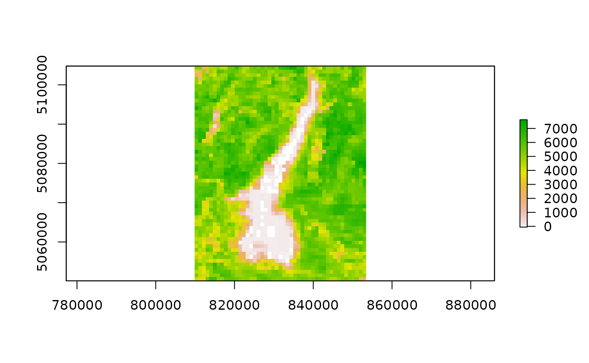
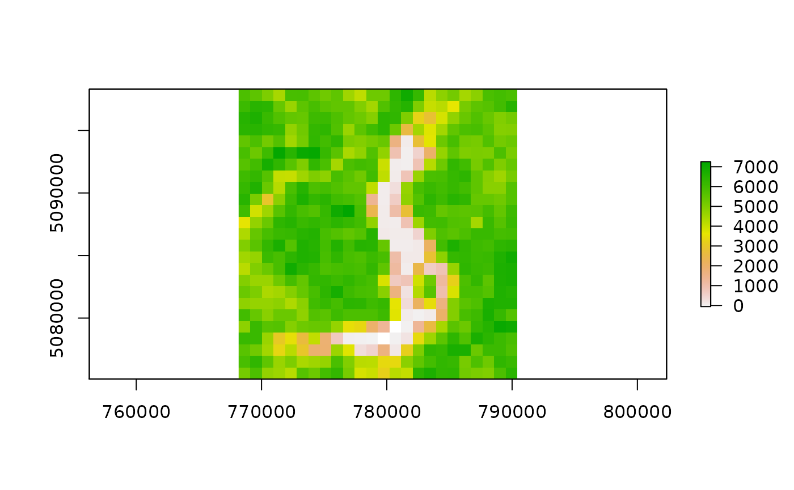

Non-Interactive Execution from within R
Source:vignettes/noninteractive_execution.Rmd
noninteractive_execution.RmdMODIStsp() can be launched in non-interactive mode within an R session by setting the optional GUI parameter to FALSE, and either providing the desired processing argument in the call to the function, or providing a previously saved opts_file specifying the path to a JSON Options file previously saved through the GUI. This allows to exploit MODIStsp functionalities within generic R processing scripts.
Specifying the processing parameters in the function call
All processing parameters can be set in the call to MODIStsp(). Mandatory parameters are selprod (specifying the MODIS product), (one of) bandsel, quality_bandsel or indexes_bandsel (that specify the desired output layers), out_folder, start_date and end_date. user and password are also needed if download_server is not equal to "offline".
The new function MODIStsp_get_prodlayers() allows easily retrieving the names of products and available layers based on product code, such as in:
library(MODIStsp)
MODIStsp_get_prodlayers("M*D13Q1")## $prodname
## [1] "Vegetation Indexes_16Days_250m (M*D13Q1)"
##
## $bandnames
## [1] "NDVI" "EVI" "VI_QA" "b1_Red" "b2_NIR" "b3_Blue"
## [7] "b7_SWIR" "View_Zen" "Sun_Zen" "Rel_Az" "DOY" "Rely"
##
## $bandfullnames
## [1] "16 day NDVI average" "16 day EVI average"
## [3] "VI quality indicators" "Surface Reflectance Band 1"
## [5] "Surface Reflectance Band 2" "Surface Reflectance Band 3"
## [7] "Surface Reflectance Band 7" "View zenith angle of VI pixel"
## [9] "Sun zenith angle of VI pixel" "Relative azimuth angle of VI pixel"
## [11] "Day of year of VI pixel" "Quality reliability of VI pixel"
##
## $quality_bandnames
## [1] "QA_qual" "QA_usef" "QA_aer" "QA_adj_cld" "QA_BRDF"
## [6] "QA_mix_cld" "QA_land_wat" "QA_snow_ice" "QA_shd"
##
## $quality_fullnames
## [1] "VI Quality"
## [2] "VI usefulness"
## [3] "Aerosol quantity"
## [4] "Adjacent cloud detected"
## [5] "Atmosphere BRDF correction performed"
## [6] "Mixed Clouds"
## [7] "Land/Water Flag"
## [8] "Possible snow/ice"
## [9] "Possible shadow"
##
## $indexes_bandnames
## [1] "SR" "NDFI" "NDII7" "SAVI"
##
## $indexes_fullnames
## [1] "Simple Ratio (NIR/Red)"
## [2] "Flood Index (Red-SWIR2)/(Red+SWIR2)"
## [3] "NDII7 (NIR-SWIR2)/(NIR+SWIR2)"
## [4] "SAVI (NIR-Red)/(NIR+Red+0.5)*(1+0.5)"The other parameters are set automatically to default values (see MODIStsp() documentation for details on the different available function arguments).
For example, the following code processes layers NDVI and EVI and quality indicator usefulness of product __M*D13Q1__, considering both Terra and Aqua platforms, for dates comprised between 2020-06-01 and 2020-06-15 and saves output to R tempdir():
library(MODIStsp)
# **NOTE** Output files of examples are saved to file.path by setting out_folder to "$tempdir".
# --> See name and available layers for product M*D13Q1
# MODIStsp_get_prodlayers("M*D13A2")
# --> Launch the processing
MODIStsp(gui = FALSE,
out_folder = "$tempdir",
selprod = "Vegetation_Indexes_16Days_1Km (M*D13A2)",
bandsel = c("EVI", "NDVI"),
quality_bandsel = "QA_usef",
indexes_bandsel = "SR",
user = "mstp_test" ,
password = "MSTP_test_01",
start_date = "2020.06.01",
end_date = "2020.06.15",
verbose = FALSE)## [1] "DONE"
# Outputs are in this case in subfolder "MODIStsp/VI_16Days_1Km_v6" of
# `base::tempdir()`:
out_fold <- file.path(tempdir(), "MODIStsp/VI_16Days_1Km_v6/")
list.files(out_fold)## [1] "EVI" "NDVI" "QA_usef" "SR" "Time_Series"
list.files(file.path(out_fold ,"EVI"))## [1] "MOD13A2_EVI_2020_161.tif" "MYD13A2_EVI_2020_153.tif"
list.files(file.path(out_fold ,"QA_usef"))## [1] "MOD13A2_QA_usef_2020_161.tif" "MYD13A2_QA_usef_2020_153.tif"Launching MODIStsp using a saved “Options file”
Alternatively, you can run MODIStsp() without opening the GUI by specifying a previously saved options file:
library(MODIStsp)
# **NOTE** Output files of examples are saved to file.path(tempdir(), "MODIStsp").
# --> Specify the path to a valid options file saved in advance from MODIStsp GUI
# Here we use a test json file saved in MODIStsp installation folder which
# downloads and processed 3 MOD13A2 images over the Como Lake (Lombardy, Italy)
# and retrieves NDVI and EVI data, plus the Usefulness Index Quality Indicator.
opts_file <- system.file("testdata/test_MOD13A2.json", package = "MODIStsp")
# --> Launch the processing
MODIStsp(gui = FALSE, opts_file = opts_file, verbose = FALSE)## [1] "DONE"
# Outputs are in this case in subfolder "MODIStsp/VI_16Days_1Km_v6" of
# `base::tempdir()`:
out_fold <- file.path(tempdir(), "MODIStsp/VI_16Days_1Km_v6")
list.files(out_fold)## [1] "EVI" "NDVI" "QA_usef" "SR" "Time_Series"
list.files(file.path(out_fold ,"EVI"))## [1] "MOD13A2_EVI_2016_161.tif" "MOD13A2_EVI_2016_177.tif"
## [3] "MOD13A2_EVI_2020_161.tif" "MYD13A2_EVI_2020_153.tif"Looping over different Options files
If you need to process different MODIS products, you can prepare beforehand different MODIStsp() options files by using the GUI, and then loop over them like this:
opts_files <- c(system.file("testdata/test_MOD13A2.json", package = "MODIStsp"),
system.file("testdata/test_MOD10A2.json", package = "MODIStsp"))
for (opts_file in opts_files) {
MODIStsp(gui = FALSE,
opts_file = opts_file,
verbose = FALSE)
}
# MOD13A2 ouputs
out_fold <- file.path(tempdir(), "MODIStsp/VI_16Days_1Km_v6")
list.files(out_fold)## [1] "EVI" "NDVI" "QA_usef" "SR" "Time_Series"
list.files(file.path(out_fold ,"NDVI"))## [1] "MOD13A2_NDVI_2016_161.tif" "MOD13A2_NDVI_2016_177.tif"
## [3] "MOD13A2_NDVI_2020_161.tif" "MYD13A2_NDVI_2020_153.tif"
# MOD10A2 ouputs
out_fold <- file.path(tempdir(), "MODIStsp/Surf_Temp_8Days_1Km_v6")
list.files(out_fold)## [1] "Days_Clear" "LST_Day_1km" "LST_Night_1km" "Time_Series"
list.files(file.path(out_fold ,"LST_Night_1km"))## [1] "MOD11A2_LST_Night_1km_2016_153.tif" "MOD11A2_LST_Night_1km_2016_161.tif"
## [3] "MOD11A2_LST_Night_1km_2016_169.tif" "MOD11A2_LST_Night_1km_2016_177.tif"Specifying the processing parameters using a previously saved options file and overwriting some parameters
Finally, it is possible to both specify a previously saved options file AND setting some parameters in the call to the function. This allows easily performing similar processings, by only updating the required arguments, as in the examples below.
Looping over different spatial extents
Specifying the spafile parameter while setting the spatmeth parameter to “file” overrides for example the output extent of the selected Options File. This allows performing the same preprocessing on different extents using a single Options File. For example:
# Run the tool using the settings previously saved in a specific option file
# and specifying the extent from a spatial file allows to re-use the same
# processing settings to perform download and reprocessing on a different area
library(MODIStsp)
opts_file <- system.file("testdata/test_MOD13A2.json", package = "MODIStsp")
spatial_file <- system.file("testdata/lakeshapes/garda_lake.shp", package = "MODIStsp")
MODIStsp(gui = FALSE,
opts_file = opts_file,
spatmeth = "file",
spafile = spatial_file,
verbose = FALSE)## [1] "DONE"
# --> Create a character array containing a list of shapefiles (or other spatial files)
extent_list <- list.files(system.file("testdata/lakeshapes/", package = "MODIStsp"), full.names = TRUE, "\\.shp$")
extent_list## [1] "/tmp/RtmpW7Y2mp/temp_libpathcaff6e6de9d/MODIStsp/testdata/lakeshapes//garda_lake.shp"
## [2] "/tmp/RtmpW7Y2mp/temp_libpathcaff6e6de9d/MODIStsp/testdata/lakeshapes//iseo_lake.shp"
# --> Loop on the list of spatial files and run MODIStsp using each of them to
# automatically define the output extent (A separate output folder is created for
# each input spatial file).
for (single_shape in extent_list) {
MODIStsp(gui = FALSE,
opts_file = opts_file,
spatmeth = "file",
spafile = single_shape,
verbose = FALSE)
}
# output files are placed in separate folders:
outfiles_garda <- list.files(
file.path(tempdir(), "MODIStsp/garda_lake/VI_16Days_1Km_v6/EVI"),
full.names = TRUE)
outfiles_garda## [1] "/tmp/RtmpuTPWmT/MODIStsp/garda_lake/VI_16Days_1Km_v6/EVI/MOD13A2_EVI_2016_161.tif"
## [2] "/tmp/RtmpuTPWmT/MODIStsp/garda_lake/VI_16Days_1Km_v6/EVI/MOD13A2_EVI_2016_177.tif"
outfiles_iseo <- list.files(
file.path(tempdir(), "MODIStsp/iseo_lake/VI_16Days_1Km_v6/EVI"),
full.names = TRUE)
outfiles_iseo## [1] "/tmp/RtmpuTPWmT/MODIStsp/iseo_lake/VI_16Days_1Km_v6/EVI/MOD13A2_EVI_2016_161.tif"
## [2] "/tmp/RtmpuTPWmT/MODIStsp/iseo_lake/VI_16Days_1Km_v6/EVI/MOD13A2_EVI_2016_177.tif"